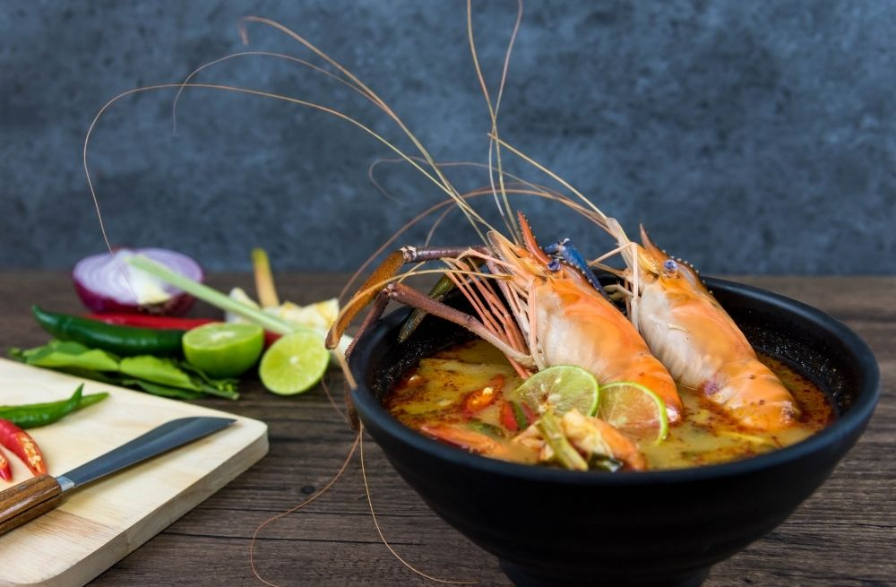
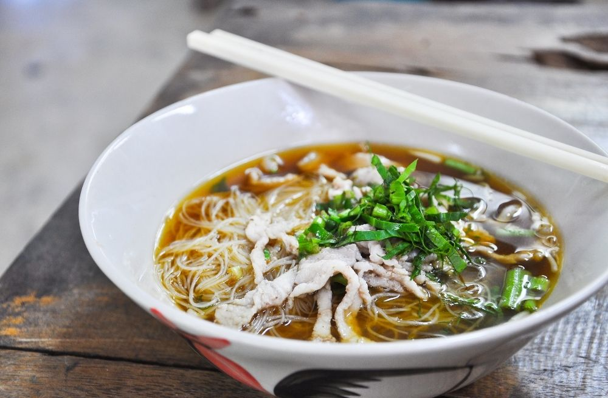
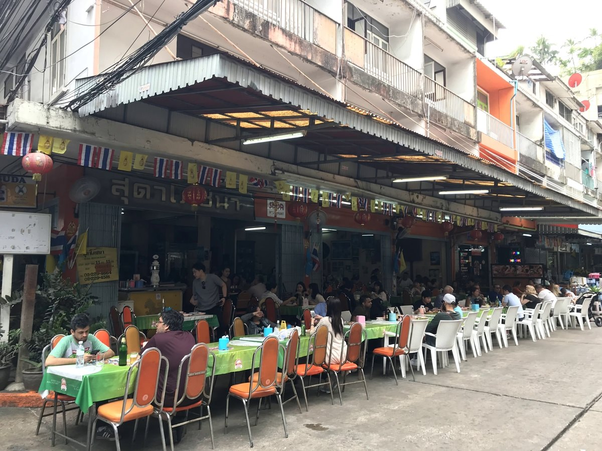
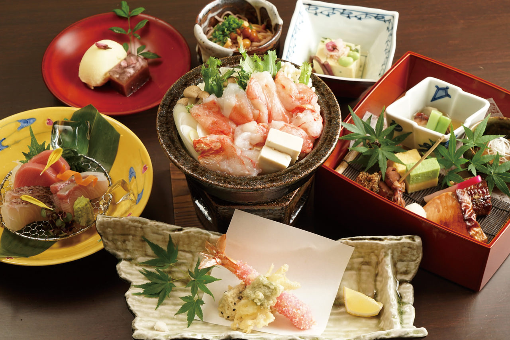
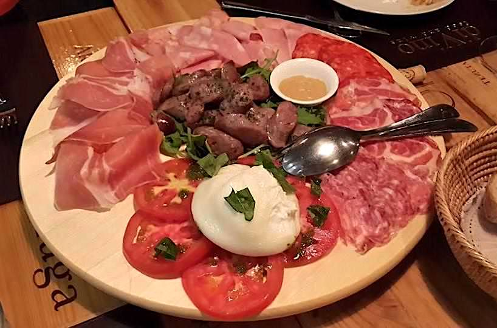
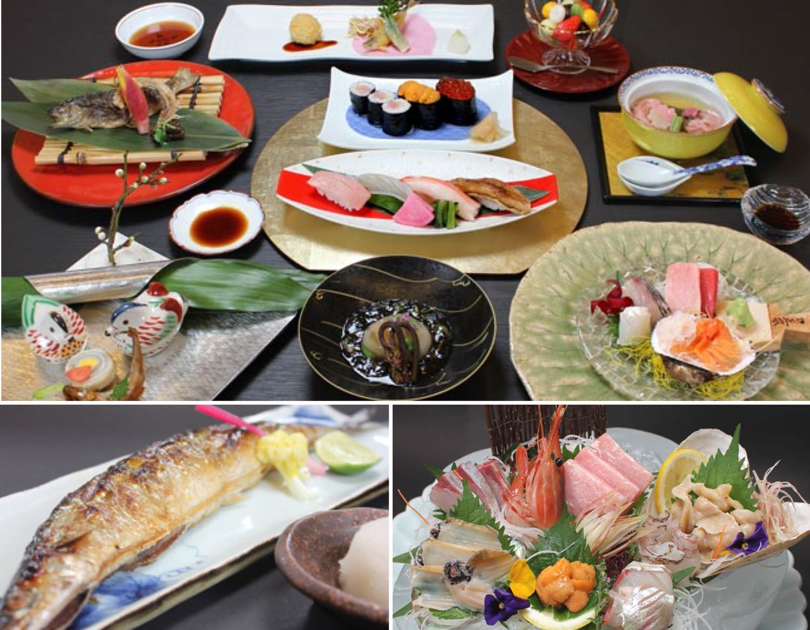
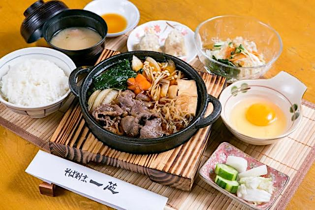

【バンコク】最高級に美味いレストラン５選【絶対に後悔しません】
こんにちは、ゆーだいです。
バンコク移住して、約３年が経過しました。
いまはドバイとタイにて、２拠点生活です。
✅バンコクの「神レストラン」まとめ ・北大路（日本食全般、高級） ・政寿司（高級な寿司屋です） ・銀座堂（安くて旨い焼き肉） ・バーンカニタ（本格タイ料理） ・コカスリウォン（最高のタイ鍋） 最高レベルに美味いです。完全にオススメ。最初の２つ以外は、価格も安い。ブログで解説します😌
上記を深堀りしつつ、解説します。
なお最初にすこし、注意点があります。
注意点：記事は完璧じゃないです
言うまでもなくですが、、記事は完璧じゃないです。
つまり、見落としもあるということ。 しかしタイに３年ほど住み、安い場所から高い場所まで、色々なレストランに行きました。
そこで今回は、下記条件でまとめています。
- 健康的である
- リピートできる
タイはグルメの国なので、変わった料理も多いです。
ミシュランに選ばれたとかで、珍しい料理も食べました。
本記事では「胃が、完全に落ち着く料理のみ」を掲載します。
普段から僕も通っており、完全に最高のレストランです。
バンコクで最高級に美味いレストラン【５選まとめ】

ツイートの通りですが、結論は下記のとおり。
{kind=link}
- 北大路（日本食全般、高級）
- 政寿司（高級な寿司屋です）
- 銀座堂（安くて旨い焼き肉）
- バーンカニタ（本格タイ料理）
- コカスリウォン（最高のタイ鍋）
順番に見ていきます。 なお記事後半では「ランク外だけど、ここも普通に美味いよ」というレストランも紹介します。
北大路（日本食全般、高級）

高級な日本食レストランです。完全に美味いです。
特に絶品なのは、下記のとおりで「カニ鍋」です。
これほどに美味いカニ鍋は、タイにないはず。
日本にもないかもです。
あと「焼き魚」も驚くほどに美味いです。
これ以上の説明は不要なので、次に進みましょう。
レストランの詳細情報
| 名称 | 北大路BANGKOK |
| 価格 | 約8,500円くらいから |
| 場所 | トンロー駅から車で５分 |
| 住所 | 212 Thonglor soi8 Sukhumvit 55 Wattana Bangkok（GoogleMapはこちら） |
| 電話 | +66613873207 |
| 営業時間 | 11時30分～23時00分 |
| ドレスコード | なし（スポーツウェアでも問題なし） |
| 公式サイト | https://www.kitaohji.co.jp/lp/thai/ |
政寿司（高級な寿司屋です）

政寿司も、、本当に最高ですね。
なお立地が「アイコンサイアム内」にあるので、要するに「大型ショッピングモールの中」となります。 なのでショッピングを楽しみ、夜は寿司を食べて、最高の気分で帰宅する感じがベストです。
レストランの詳細情報
| 名称 | MASA | バンコクの寿司店おたる政寿司 |
| 価格 | 約20,000円くらいから |
| 場所 | アイコンサイアムのモール内 |
| 住所 | ICONSIAM ฝั่ง SIAM TAKASHIMAYA ชั้น4 โซน Rosedining 299 ซอย เจริญนคร 5 ถ. เจริญนคร คลองต้นไทร เขตคลองสาน กรุงเทพมหานคร 10600（GoogleMapはこちら） |
| 電話 | +6620053800 |
| 営業時間 | 11時半～15時／17時～21時 |
| ドレスコード | なし（スポーツウェアでも問題なし） |
| 公式サイト | https://masazushi.co.th/ja/ |
銀座堂（安くて旨い焼き肉）

銀座堂に関しては、日常的にどうぞ。
僕は銀座堂の近所に住んでいるので、サクッとランチで出かけます。
ランチメニューだと、たしか「200バーツ(=700円)」くらいです。
なお僕は「脂身の少ない肉」が好きなので、ランチメニューは使いません。
いつもは通常メニューの「牛タン＆ロース」を頼んでいます。
ちなみに「上タン or タン」と「上ロース or ロース」に分かれていますが、僕は「普通のタン＆ロース」が好きです。 上が付いてるメニューは、脂身が増えて微妙なんですよね…。余談でした。
レストランの詳細情報
| 名称 | 銀座堂 |
| 価格 | 約800円くらいから |
| 場所 | トンロー付近に３店舗 |
| 住所 | ３店舗あります。詳しくは「公式サイト」の最下部をご覧ください。 |
| ドレスコード | なし（スポーツウェアでも問題なし） |
バーンカニタ（本格タイ料理）

本格的なタイ料理を食べたいなら、こちらがオススメ。
現地に慣れてる方なら問題ないですが、慣れないうちに食べるとお腹を下します。
しかし今回紹介する「バーンカニタ」なら、問題ないです。
基本はすべて美味しいですが、海鮮系もかなり良いです。
あとはブロッコリー系の料理も美味く、パッタイも美味でした。
※注意点：この店は「蚊が多い」という欠点があります。蚊がいたら我慢せず、店員に「モスキート」と言いましょう。そしたらスプレーなどで退治してくれます。
更新情報：2022年2月24日
レストランの詳細情報
| 名称 | Baan Khanitha |
| 価格 | 約3,000円くらいから |
| 場所 | トンロー駅から徒歩５分 |
| 住所 | 複数店舗あります。詳しくは「公式サイト」の最下部をご覧ください。 |
| ドレスコード | なし（スポーツウェアでも問題なし） |
コカスリウォン（最高のタイ鍋）

最後に紹介するのは、本格的な「タイスキ」です。
要するに「タイの鍋」ですね。
そして食べます。めちゃくちゃ美味いです。
あと「小籠包」のようなメニューもあり、これも美味い。
あと肉系の料理も美味く、、要するに「すべて美味い」です。
鍋はヘルシーだし、最高ですよね。
レストランの詳細情報
| 名称 | Coca Restaurant |
| 価格 | 約3,000円くらいから |
| 場所 | シーロム駅からタクシーで５分 |
| 住所 | 8 Anumarnratchathon, Surawong Rd, Suriya Wong, Bang Rak, Bangkok 10500, Thailand（GoogleMapはこちら） |
| 電話 | +6622360107 |
| 営業時間 | 11時〜14時半／17時〜22時 |
| ドレスコード | なし（スポーツウェアでも問題なし） |
| 公式サイト | https://www.coca.com/ |
ランク外だけど、確実に満足度の高いレストラン７選

前半の５つは、かなり厳選しました。
間違いなく最高だと思います。
{kind=link}
しかし、タイには「ランク外だけど、素晴らしいレストラン」もあります。
参考までに７つだけ、サクッとまとめておきます。
その①：スダーレストラン（アソーク付近）

画像の引用元：enjoy-clubbing.com
ローカルタイ料理で、安くて美味い。
しかし辛いので、そこだけ注意です。
{kind=link}
観光客が多めで、いつも賑わっているお店です。
» 地図はこちら（GoogleMapが開きます）
その②：将泰庵[ショウタイアン]（トンロー付近）

画像の引用元：shoutaian-bangkok-nikkohotel.com
こちらには「飲めるハンバーグ」があります。
普通に美味いです。
脂っこいのが大丈夫な人は、かなり最高かもです。
» 地図はこちら（GoogleMapが開きます）
その③：梅の花（トンロー付近＆アソーク付近）

画像引用元：bangmeshi.com
こちらもハイレベルな日本食です。
特に美味しいのは、たぶん「豆腐」ですね。食感が素晴らしいです。
{kind=link}
１つだけ残念な点は、接客が微妙なところ。
特にランチライムは人が足りてなさそうで、ちょい微妙でした。 味は良いです。
» トンロー付近の店の地図はこちら
» アソーク付近の店の地図はこちら
その④：ルアンウライ（シーロム付近）

画像引用元：ruen-urai.com
こちらのタイ料理は、素晴らしく美味いです。
高そうな雰囲気の店ですが、実際はそうでもないです。
シーロム付近で店を探すなら、ここはかなりありですね。
しかし外だと蚊が多いので、蚊よけは必須です。
» 地図はこちら（GoogleMapが開きます）
その⑤：ディ・ヴィーノ（トンロー付近）

画像引用元：tripadvisor.com/
イタリアンなら、こちらが美味いです。 めちゃくちゃ激ウマか、と聞かれたら、答えは「80点くらい」かもですが、不満はありません。
{kind=link}
立地も良いので、サクッとイタリアンを食べたいなら、オススメです。
» 地図はこちら（GoogleMapが開きます）
その⑥：葵[アオイ]（プロンポン付近）

画像引用元：aoi-bkk.com
こちらの店は、プロンポン駅から直結の「エンポリアムデパート」に入っています。
{kind=link}
エンポリアムには「大戸屋＆富士レストラン」という定番チェーン店が入っていますが、クオリティは「圧倒的に、葵[アオイ]の勝利」です。
その分でお値段は少し上がりますが、ランチ釜飯とかは、とても美味い。
» 地図はこちら（GoogleMapが開きます）
その⑦：そば一芯[イッシン]（プロンポン付近）

画像引用元：isshin-soba.com/
ここは、正直なところ紹介するかどうか迷いました。
結論として「可もなく、不可もなく」なんですよね。
{kind=link}
そばは美味いです。他のメニューも無難です。失敗しない感じです。
座敷が落ち着くので、ゆったり飲みつつ話すのに向いてるかもです。
» 地図はこちら（GoogleMapが開きます）
というわけで、バンコクのレストランをまとめました。
繰り返しですが、このリストは完璧じゃないです。
見る人によっては、全然違う意見を言うはず。
良い食事を食べると、心も体も健康になります。 良い食事を食べつつ、適度に筋トレして、これで人生は幸福だと思うので、少しでも参考になれば幸いです。
それでは、快適なバンコクライフをお送りください。
P.S：普段の僕は「Twitter」を軸に発信しています。また最近は「Webマーケ教材」の作成に注力しており、ネットで稼ぐスキルを学べます。ブログの更新通知は「メルマガ」から送っています。スパムは送りません。更新通知だけ送ります。